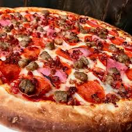

Pepe's pizza was founded in 1951 by Andrew Pepe. Originally born in Italy,
Andrew and his family moved to America when he was 10. Andrew grew up in
New York City. He always used to make pizza with his grandmother growing
up, which is where he got his secret recipe from. Here at Pepe's, we use
only the finest local ingredients for our pizza. We strive for our pizza
to live up to the standards of Grandmo Pepe. Our pizza is the best around
and satisfaction is guaranteed.
Our Specialty Pizzas
Meet Lovers

The Vegetarian
The Buffalo Chicken
The Philly
Our Locations
The Beach
Located right o the beach, you can enjoy our AMAZING pizza, with the
best view around.